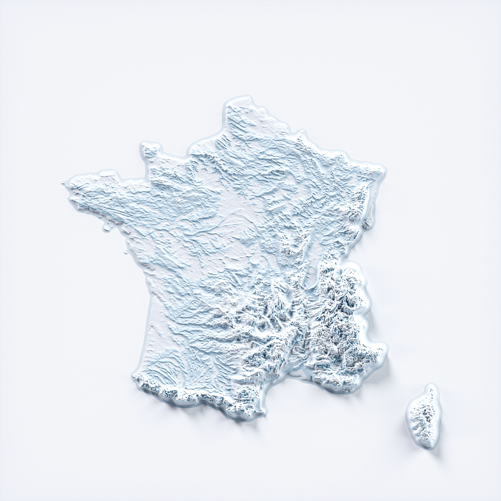

[Map 1 title — e.g., an ancient map]
[Map image goes here]
[1–2 sentences: what does this map show, and what does it add to our understanding of France? Cite your source.]
How France has been surveyed, projected, and mapped.
Placeholder — research added weekly
[1–2 sentences: what will this page cover, and why maps are a useful starting point for understanding France?]
Requirement: at least 4 maps, each with 1–2 sentences of context. Suggested categories are listed below — swap in whichever four (or more) you choose.
[1–2 sentences: what does this map show, and what does it add to our understanding of France? Cite your source.]
[1–2 sentences: what does this map show, and what does it add to our understanding of France? Cite your source.]
[1–2 sentences: what does this map show, and what does it add to our understanding of France? Cite your source.]
[1–2 sentences: what does this map show, and what does it add to our understanding of France? Cite your source.]
[1–2 sentences: what does this map show, and what does it add to our understanding of France? Cite your source.]
[Your answer here, with a citation.]
[Your answer here, with a citation.]
[Your answer here, with a citation.]
[If so: brief history, a photo/image, and their biggest cartographic accomplishments. Cite your source.]
[Add dated notes here as research is added each week.]